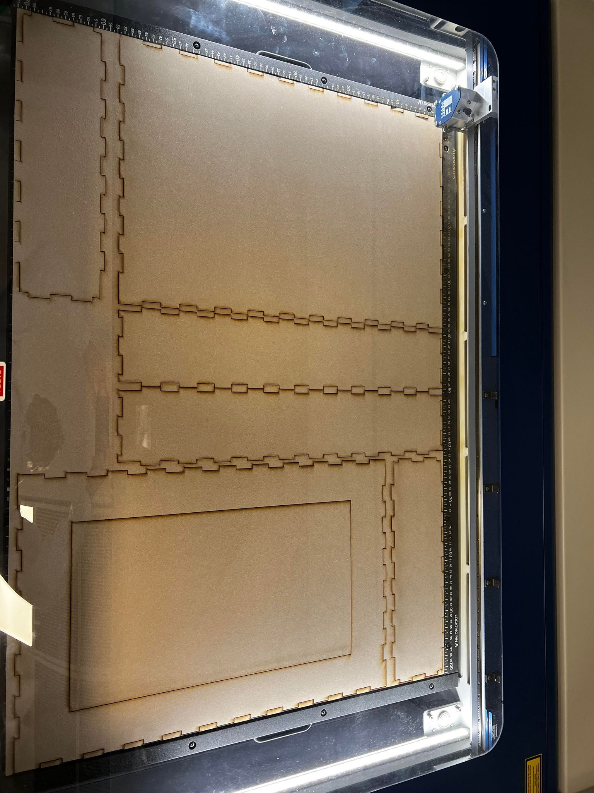

Sluttprosjekt - MagicMirror
Som min eksamensinnlevering har jeg valgt sluttprosjektet "MagicMirror". MagicMirror er et smartspeil som viser vær, nyheter, dato osv. Jeg fikk inspirasjon til oppgaven fra oversikt emneansvarlig hadde over mulige sluttprosjekter. Det orginale prosjektet er hentet fra hackaday.io. Jeg har gjort egne tilnærminger, men brukt aspekter fra det prosjektet. Prosjektet treffer innom flere temaer som har vært relevantet i kurset. Nederst har jeg lagt en video som forklarer det ferdige speilet.
Utstyr
For prosjektet har jeg trengt følgende deler:
- Pc-skjerm
- RaspberryPi
- Akryil gjennomsiktig speil
- Treverk til ramme
- Laserkutter til å lage ramme
- 3Dprinter og tråd til å printe
- Trelim
- Skruer
- En RaspberryPi
Speilets ramme
Slik som speilet var designet i inspirasjonskilden, ble det brukt "planker" til ramme og det ble 3dprintet fester som skulle holde skjermen på baksiden på plass. Jeg ønsket også originalt å benytte samme metode, men da emneansvarlig kom med forsalg om å laserkutte makercase istedet fant jeg ut at jeg heller ville bruke det. Jeg var redd for at matrialet som skulle laserkuttes ble for tynt, da jeg måtte benytte fester på baksiden av skjermen. Jeg fant derimot til slutt ut at det ville gå med 6mm, hvor jeg kunne benytte korte skruer. Designet av rammen ble da slik:
Etter å ha lastet ned designet for boksen fikk jeg det inn i programmet Inkscape hvor jeg fikk fordelt de forskjellige delene på treplaten jeg skulle laserkutte. I tillegg måtte jeg lage et utsnitt
på framsiden av boksen, hvor selve speilet skulle være. Etter å ha laget det og lastet det ned som PDF ble det slikt:

Denne filen ble så sendt til laserkutteren.
Selve kuttingen gikk fint:

Etter å ha laserkuttet rammen til speilet, var neste steg å lime den sammen:
3D - print
Skjermfester
For å holde skjermen og speilet på plass i rammen, krevdes det noen form for fester. Inspirasjonsmalen hadde laget noen, men jeg ønsket å designe og printe egne. Jeg tenkte da å benytte et feste i hvert hjørne av skjermen. Jeg designet da et feste som så slikt ut:
Med dette feste vil skjermen bli holdt ned mot fremsiden av speilrammen. Printen gikk slik:
Resultatet av printen:
RaspberryPi-feste
I tilegg til å printe skjermfester valgte jeg å printe et feste for RaspberryPien slik at den ville sitte fast på baksiden av skjermen. Jeg fant et design for et feste på thingiverse.com Modellen var delt inn i topp og bunn:
Printing av disse delene gikk fint:
Resultatet ble også bra:
Koding av speilet
For at speilet skulle bli et smartspeil var neste steg å kode en RasberryPi til å vise informasjonen jeg ønsket. I utgangspunktet skulle jeg benytte koden som var brukt i eksempelet, men koden var utdatert og fungerte ikke helt med hva jeg ønsket. Jeg fant da et annet eksempel kalt "MagicMirror". Dette eksempelet hadde en fin veiledning på hvordan man skulle sette opp smartspeilet, samt en enkel introduksjon til hvordan det kunne tilpasses.
For å få speilet på RaspberryPien klonet jeg Github Branchen som ble linket fra MagicMirror eksemplet. Deretter lastet jeg ned
speilet fra branchen som ble klonet:
Når programmet ble kjørt så det slik ut:
Jeg ønsket å personalisere speilet noe. Som forskjell ville jeg ha nyheter fra VG, værmelding fra Halden og få inn norske kalenderdager. Jeg gikk dermed inn i Config.js
og endret det jeg ønsket.
- Jeg hentet URL til en norsk kalender.
- Jeg lagde en API-nøkkel for værdata slik at værmeldingen gjaldt for Halden.
- Jeg la inn RSS-newsfeed fra VG slik at nyeste store sak ble vist.
Resultatet av endringene ble da slikt:
Det siste jeg gjorde med kode var å vende skjermen 90 grader, samt gjøre displayområdet mindre slik at det passet innenfor tiltenkt speilstørrelse og retning.
Montering
Da delene var klare, og koden for RaspberryPien ferdig var neste steg å sette sammen alle delene. Jeg forsøkte å sette alt på plass før jeg begynte å skru fast feste O.L. Jeg fant da ut at jeg trengte noen flere deler enn først tiltenkt, samt endre noen av festene.
Speilholdere
Ettersom akryl-glasset var smalere enn innvendig bredde av rammen, og skjermen lå oppå akryl-glasset, sklei det rundt på fremsiden av speilet. Jeg løste det ved å printe to vinkler som var tilpasset akryl-glassets dybde, samt avstanden på 5mm mellom skjermen og rammen. Designet ble slikt:
Feil med fester
Selvom det var nøye målt virket det som om det var noen millimeter avvik på skjermfesten. Det førte til at kun 3 fikk plass til å holde skjermen på plass som sett på bilde:
Jeg designet et nytt feste med 3mm bredde istedet for 5mm. Printen av det og glassholderene gikk bra:
Med de nye festene var det ikke noe problem å montere festene og dermed skjermen til rammen:
Hvert feste ble festet til rammen med skruer i hull som var tilpasset 4mm skruer:
Da skjermen var festet var speilet også klart. Uten RaspberryPien ble det slikt:
Når RaspberryPien blir skrudd på blir da speilet slikt:
I utgangspunktet måtte programmet for speilet kjøres manuelt for å starte opp speilet, men gjennom youtubevideoen til Fuzz The Pi Guy
fikk jeg satt opp en metode som gjorde at speilet startet ved boot. Under er det en beskrivende video av speilet.
Dokumentasjon
I github-repoet mitt ligger alle filer som har blitt brukt i prosjektet: